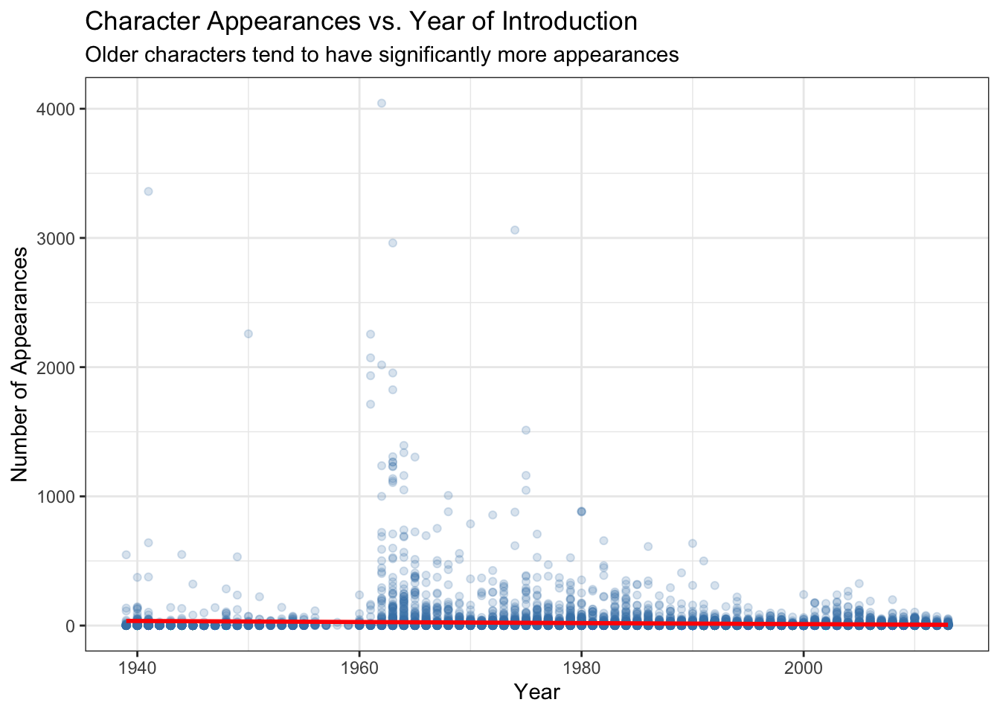
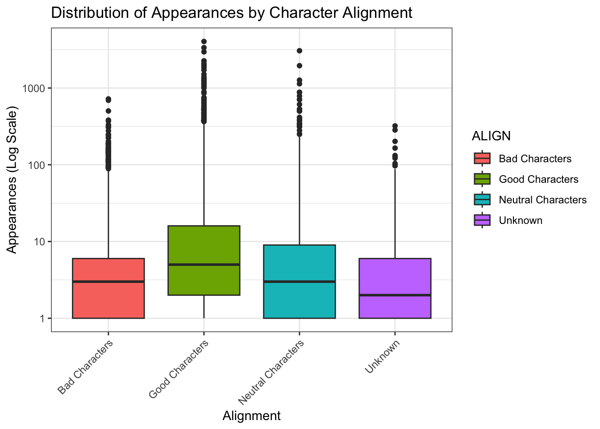

# 1. Load libraries and dataset
library(tidyverse)── Attaching core tidyverse packages ──────────────────────── tidyverse 2.0.0 ──
✔ dplyr 1.2.0 ✔ readr 2.2.0
✔ forcats 1.0.1 ✔ stringr 1.6.0
✔ ggplot2 4.0.2 ✔ tibble 3.3.1
✔ lubridate 1.9.5 ✔ tidyr 1.3.2
✔ purrr 1.2.1
── Conflicts ────────────────────────────────────────── tidyverse_conflicts() ──
✖ dplyr::filter() masks stats::filter()
✖ dplyr::lag() masks stats::lag()
ℹ Use the conflicted package (<http://conflicted.r-lib.org/>) to force all conflicts to become errorsmarvel_data <- read_csv("marvel-wikia-data.csv")Rows: 16376 Columns: 13
── Column specification ────────────────────────────────────────────────────────
Delimiter: ","
chr (10): name, urlslug, ID, ALIGN, EYE, HAIR, SEX, GSM, ALIVE, FIRST APPEAR...
dbl (3): page_id, APPEARANCES, Year
ℹ Use `spec()` to retrieve the full column specification for this data.
ℹ Specify the column types or set `show_col_types = FALSE` to quiet this message.# 2. Data Cleaning
marvel_clean <- marvel_data %>%
filter(!is.na(APPEARANCES), !is.na(Year)) %>%
mutate(
ALIGN = ifelse(is.na(ALIGN), "Unknown", ALIGN),
ID = ifelse(is.na(ID), "Unknown", ID),
SEX = ifelse(is.na(SEX), "Unknown", SEX)
) %>%
mutate(across(c(ALIGN, ID, SEX), as.factor))
# 3. EDA
# Plot 1: Relationship between Year and Appearances (Scatter Plot)
ggplot(marvel_clean, aes(x = Year, y = APPEARANCES)) +
geom_point(alpha = 0.2, color = "steelblue") +
geom_smooth(method = "lm", color = "red") +
theme_bw() +
labs(
title = "Character Appearances vs. Year of Introduction",
subtitle = "Older characters tend to have significantly more appearances",
x = "Year",
y = "Number of Appearances"
)`geom_smooth()` using formula = 'y ~ x'
# Plot 2: Appearances
ggplot(marvel_clean, aes(x = ALIGN, y = APPEARANCES, fill = ALIGN)) +
geom_boxplot() +
scale_y_log10() +
theme_bw() +
theme(axis.text.x = element_text(angle = 45, hjust = 1)) +
labs(
title = "Distribution of Appearances by Character Alignment",
x = "Alignment",
y = "Appearances (Log Scale)"
)
# Plot 3: Summary Table
marvel_summary <- marvel_clean %>%
group_by(ALIGN) %>%
summarise(
Count = n(),
Average_Appearances = mean(APPEARANCES),
Median_Appearances = median(APPEARANCES)
)
print(marvel_summary)# A tibble: 4 × 4
ALIGN Count Average_Appearances Median_Appearances
<fct> <int> <dbl> <dbl>
1 Bad Characters 6118 8.53 3
2 Good Characters 4114 36.1 5
3 Neutral Characters 1974 19.9 3
4 Unknown 2459 6.04 2